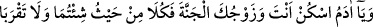
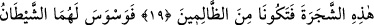
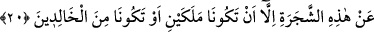
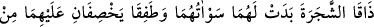
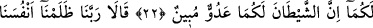
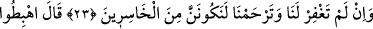
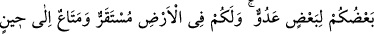
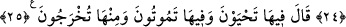

HZ. ÂDEM VE HAVVA’NIN
YERYÜZÜNE İNDİRİLMESİ
19. (Allah buyurdu ki): Ey Âdem! Sen ve eşin cennette yerleşin dilediğiniz
yerden yeyin. Ancak şu ağaca yaklaşmayın! Sonra zalimlerden olursunuz.
20. Derken şeytan, birbirine kapalı ayıp yerlerini kendilerine göstermek için
onlara vesvese verdi ve: Rabbiniz size bu ağacı sırf melek olursunuz veya ebedî
kalanlardan olursunuz diye yasakladı, dedi.
21. Ve onlara: Ben gerçekten size öğüt verenlerdenim, diye yemin etti.
22. Böylece onları hile ile aldattı. Ağacın meyvesini tattıklarında ayıp yerleri
kendilerine göründü. Ve cennet yapraklarından üzerlerini örtmeye başladılar.
Rableri onlara: Ben size o ağacı yasaklamadım mı ve şeytan size apaçık bir
düşmandır, demedim mi? diye nidâ etti.
23. (Âdem ile eşi) dediler ki: Ey Rabbimiz! Biz kendimize zulmettik. Eğer bizi
bağışlamaz ve bize acımazsan mutlaka ziyan edenlerden oluruz.
24. Allah: Birbirinize düşman olarak inin! Sizin için yeryüzünde bir süreye kadar
yerleşme ve faydalanma vardır, buyurdu.
25.
“Orada
yaşayacaksınız,
orada
öleceksiniz
ve
orada
(diriltilip)
çıkarılacaksınız” dedi.